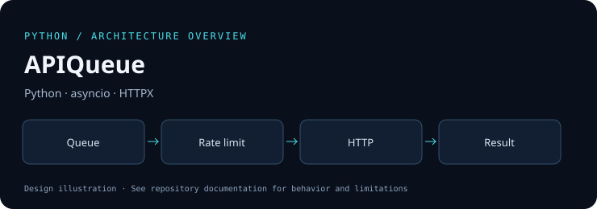
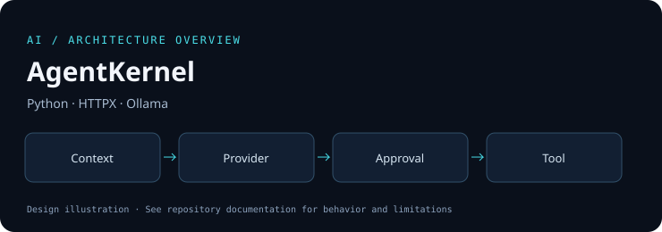
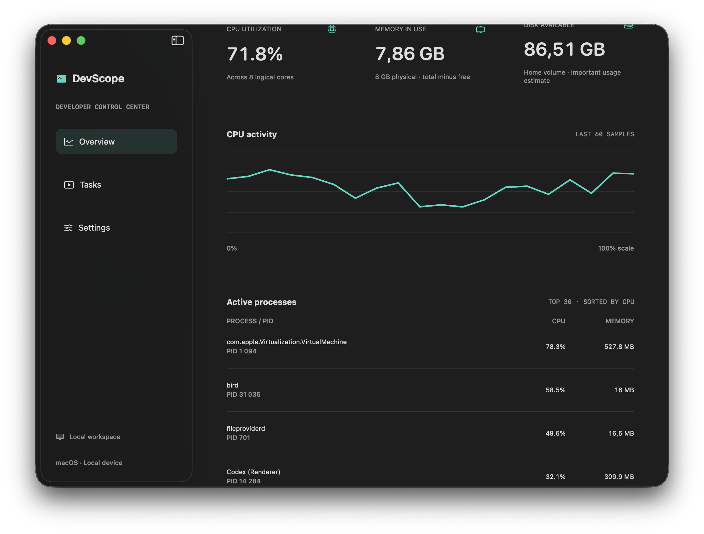
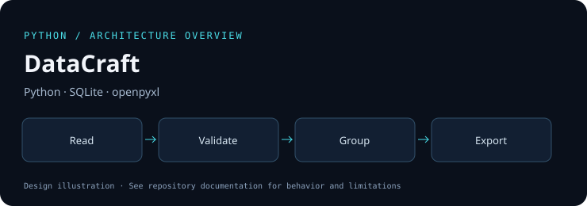

01 / Pythonv0.1
FileForge
File inventories, SHA-256 duplicate detection and planned renames with collision checks.
Python · pathlib · CLISOFTWARE / SYSTEMS / INTELLIGENCE
Practical tools. Explicit boundaries. Reproducible checks.
A growing collection of Python tools, C libraries, AI agent systems and native applications.
01 / SELECTED WORK
Six focused projects, each with source, examples, documented limits and automated checks.
File inventories, SHA-256 duplicate detection and planned renames with collision checks.
Python · pathlib · CLI
Bounded asynchronous HTTP jobs with retries, rate limits and structured results.
Python · asyncio · HTTPX
A compact agent runtime with tools, provider adapters, request budgets and explicit approval.
Python · HTTPX · OllamaC11 arena and pool allocators with checked arithmetic, allocation statistics and sanitizers.
C11 · CMake · ASan / UBSan
A macOS SwiftUI control center for system metrics, tasks, approved scripts and logs.
Swift · SwiftUI · macOS
Validated CSV, JSONL, JSON and XLSX pipelines with disk-backed grouping and exact decimal sums.
Python · SQLite · openpyxlFlow graphics are architecture illustrations. The DevScope card shows a real running macOS application. Verification details live in each repository.
02 / DEVELOPMENT PHILOSOPHY
Small, understandable components. Observable failures. Honest claims about what has been tested.
# A useful project starts with constraints.
input → validate
operation → bound the resources
failure → preserve the original
result → verify and documentAtomic data exports, rename preflight, checked allocator arithmetic and explicit tool approval.
Offline Python tests, sanitizer builds for C, Swift core tests and GitHub Actions workflows.
Provider adapters are not proof of a live model run. A build is not a production release. Limits belong in the README.
Preserve upstream attribution and licenses. Describe the specific changes in derivative projects.
03 / OPEN SOURCE
Two source-level improvements with regression tests. These are published forks; no claim of upstream acceptance.
04 / ABOUT THE COLLECTION
This portfolio connects file and API automation, data processing, memory management, local-model adapters and a native desktop interface.
These projects were developed with AI assistance. Explore the implementation, run the examples and inspect the verification records for each repository.
Next directions include C++ systems work, iOS, Android and machine learning. They remain future work until working implementations and checks exist.
05 / GET IN TOUCH
Explore the repositories, reproduce an example or open an issue with a concrete idea.
Visit GitHub